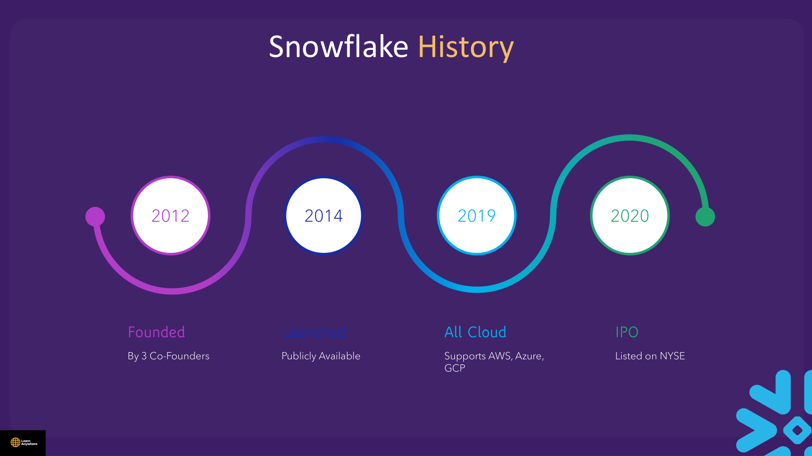
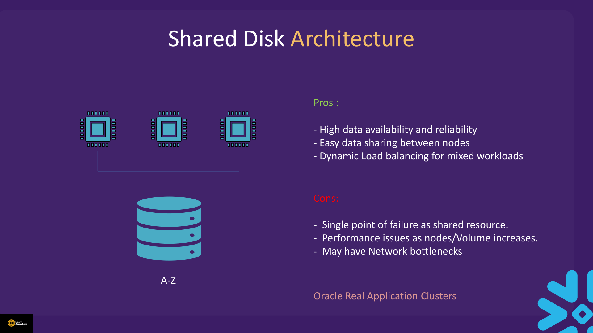
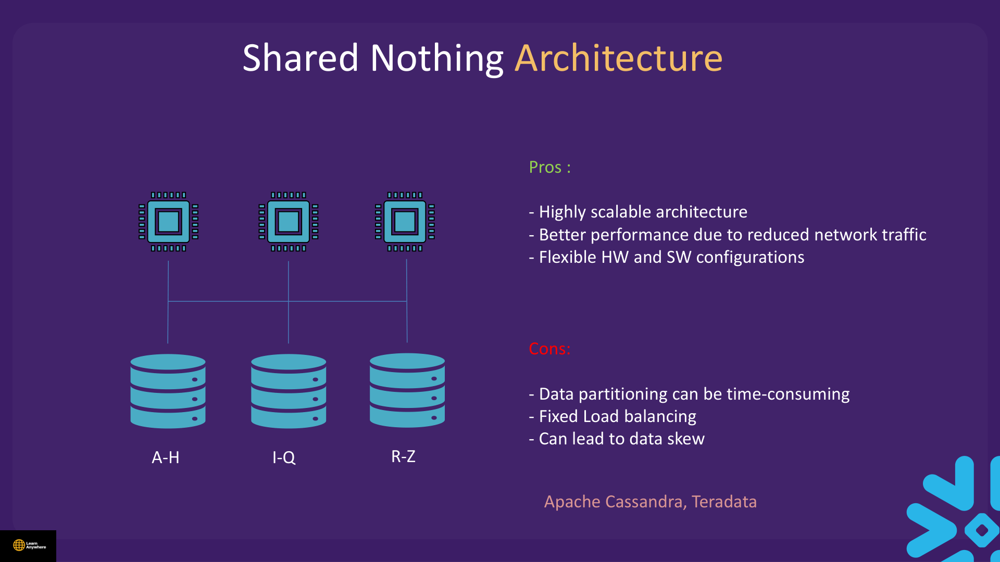
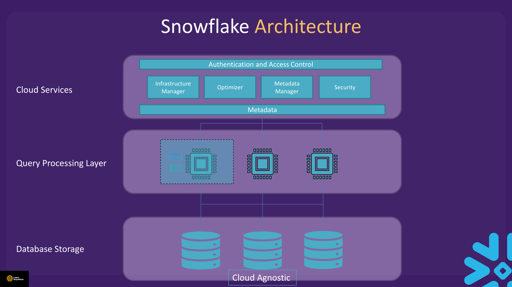
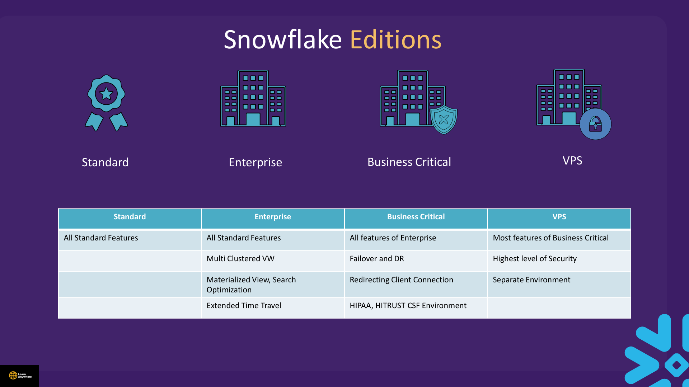

Lectures in this section
Every lecture below links to the notes that cover it.
- Exam Details 1:44
- Introduction 2:43
- How to Use this Course? 3:04
- Resources 0:01
- Traditional Architecture 3:31
- Snowflake Architecure 6:14
- Snowflake Editions 2:41
- Introduction Quiz
Exam Details
The SnowPro Core (COF-C03) certification validates hands-on knowledge of the Snowflake AI Data Cloud — architecture, loading, governance, performance, and collaboration. Always confirm the current format on the official certification page before you book.
| # | Official capability area | Relevant course sections |
|---|---|---|
| 1 | Use the Snowflake AI Data Cloud architecture | Sections 1–3, 14–15 |
| 2 | Manage Snowflake accounts and virtual warehouses | Sections 2, 4, 10–11, 15 |
| 3 | Perform data loading, unloading, and transformation | Sections 4–5, 7, 13 |
| 4 | Use structured, semi-structured, and unstructured data | Sections 2–3, 6, 15 |
| 5 | Monitor and optimize performance | Sections 2, 9, 15 |
| 6 | Enable data collaboration and protection | Sections 3, 12, 14 |
| 7 | Establish Snowflake connectivity | Sections 4–5, 7 |
The current study guide also groups content into five blueprint domains with approximate weights (Architecture ~31%, Governance ~20%, Loading/Connectivity ~18%, Performance/Transformation ~21%, Collaboration ~10%). Use capability areas for objective coverage; use domain weights for study time allocation.
learn.snowflake.com for authoritative format, retake policy, and blueprint updates. This study site does not publish question counts, exam duration, or passing scores. For a full cram plan and capstone scenario, see Section 16 — Mock Test.
Introduction
Snowflake is a cloud-native, fully managed data platform delivered as SaaS. It is not a lift-and-shift of legacy database software — it was designed from scratch for elastic cloud storage and compute.
SQL data warehouse
Full DDL/DML, joins, transactions. If you know SQL, you can query on day one.
Built for the cloud
Runs on AWS, Azure, or GCP. No servers, patches, or storage tiers for you to manage.
Delivered as a service
Pay-as-you-go credits. Snowflake manages infrastructure, upgrades, and optimization.
Where Snowflake came from
Four dates are worth remembering, because they explain why the product looks the way it does. Snowflake was founded in 2012 by three co-founders, came out of stealth and became publicly available in 2014, reached all three major clouds by 2019, and listed on the NYSE in 2020 in what was then the largest software IPO ever.

The 2012 start date matters more than it looks. Snowflake had no legacy database engine to carry forward, so it could assume cheap, infinitely elastic object storage and separate that from compute — a design choice that was not available to products written in the 1990s.
What "SaaS" actually buys you
Snowflake is delivered as Software as a Service, and the course is specific about what that means in practice:
- Subscription pricing. You buy credits rather than licences and hardware.
- Fully managed. There is no customer-maintained infrastructure — no servers, patches, indexes, vacuuming, or storage tiering.
- Quick setup, minimal upfront cost. An account exists minutes after signup, and you can be querying without a capacity plan.
Restating the same idea from the other side: Snowflake is a cloud-based data platform that is not built on old database technology, is cloud native, separates compute from storage, and is consumed as a service.
How to Use this Course?
These offline notes follow the Udemy course lecture order. Each section page lists every lecture with a link to the matching notes block. Work through sections sequentially — later sections assume context from earlier ones.
- Watch the lecture first, then read the matching section here for depth, exam tips, and cleaned SQL from the course files.
- Run the SQL in a trial or dev account. Course files live under
Code and Data Files/in the course download; paths are cited on demo lectures. - Mark complete at the bottom of each section when finished — progress is stored locally in your browser.
- Use the search box injected at the top of each page to jump across all 17 sections.
AUTO_SUSPEND = 60 on study warehouses from Section 2 onward.
Resources
- Official Snowflake Documentation
- Official SnowPro Core (COF-C03) certification page
- Course
Code and Data Files/— SQL demos and sample data (data/MOCK.csv,data/MOCK1.csv) - This site Source coverage map — which course files map to which section
Traditional Architecture
Before Snowflake, teams stitched together OLTP databases, ETL tools, and on-prem warehouses. Two classic MPP patterns explain why Snowflake's hybrid model is different.
| Pattern | Examples | Strengths | Weaknesses |
|---|---|---|---|
| Shared-disk | Oracle RAC | One copy of data; easy sharing between nodes | Shared disk becomes a bottleneck; harder to scale |
| Shared-nothing | Teradata, Cassandra | High parallelism; each node owns a slice | Storage and compute coupled; data skew; painful repartitioning |
| Multi-cluster shared data | Snowflake | One centralized storage layer; many independent compute clusters | Requires cloud object storage; SaaS model |
Three architectural patterns
one disk, many nodes
data split per node
shared storage + elastic compute
Shared-disk in detail
Every compute node can see the whole dataset, because they all mount the same storage volume. In the course diagram each node reaches into one shelf holding everything from A to Z. Oracle Real Application Clusters is the canonical example.

Pros
- High data availability and reliability
- Easy data sharing between nodes — there is only one copy
- Dynamic load balancing for mixed workloads
Cons
- The shared resource is a single point of failure
- Performance degrades as nodes and data volume increase
- Network bottlenecks between compute and the shared disk
Shared-nothing in detail
The data is partitioned so each node privately owns a slice — A–H on one node, I–Q on the next, R–Z on the third — and a node only ever reads its own disk. Teradata and Apache Cassandra work this way.

Pros
- Highly scalable architecture
- Better performance from reduced network traffic — reads stay local
- Flexible hardware and software configurations
Cons
- Data partitioning is time-consuming
- Fixed load balancing — the partition scheme decides who works
- Can lead to data skew, where one node holds far more than its share
Snowflake Architecture
Snowflake implements its hybrid design as three independent layers. Storage scales separately from compute; cloud services coordinate everything without you managing clusters.

Cloud Services (the brain)
Cloud services coordinate everything that happens on the platform: they manage a user request from login all the way to dispatching the query, and they own security, access management and monitoring along the way.
- Handles login, security, access control, and query parsing/optimization.
- Maintains global metadata and the result cache.
- Runs DDL,
SHOW/DESCRIBE, and metadata-only queries without starting a warehouse. - Cloud-services credits are waived when daily usage is below 10% of compute credits consumed.
The deck breaks the layer into five named components, and they are worth knowing by name because questions sometimes ask which component does what:
| Component | Responsibility |
|---|---|
| Authentication and Access Control | Verifies user identity and manages who may reach which data. |
| Infrastructure Manager | Provisions and manages the compute resources Snowflake runs on. |
| Optimizer | Determines the most efficient way to execute a query. There are no hints and no manual plans to maintain. |
| Metadata Manager | Manages the metadata associated with data stored in Snowflake — this is what makes COUNT(*), min/max and pruning cheap. |
| Security | Encryption, network isolation and the other protections applied to data. |
Query Processing (the muscle)
Queries execute in this layer, and the unit of execution is the virtual warehouse.
- Virtual warehouses are MPP clusters of compute resources (CPU, memory, local disk cache).
- Each warehouse has its own temporary memory and cache, which is why one warehouse cannot slow another down.
- Each warehouse is independent — ETL and BI workloads do not compete for the same cluster.
- Required for DML,
COPY, CTAS, and queries that scan data. - Query results stay in cache and are purged after a period — 24 hours for the result cache, covered in Section 9.
Database Storage (the vault)
- Data is reorganized into Snowflake's proprietary optimized, compressed, columnar format.
- Physically stored in cloud object storage (S3, Azure Blob, GCS) — you never access files directly.
- Stored centrally and accessible to all nodes, which is what lets any warehouse query any table.
- Data objects are not directly accessible — the only way in is a Snowflake SQL query. You cannot browse the underlying bucket.
- Cloud agnostic: the SQL experience is the same regardless of underlying cloud.
Query path
Micro-partitions
Snowflake automatically divides table data into immutable micro-partitions — the unit of pruning, Time Travel, and zero-copy cloning. You never define or manage them manually.
WHERE sale_date = '2024-01-15', Snowflake reads only cards whose date range could contain that value — skipping entire drawers of irrelevant data.
- Size: Roughly 50–500 MB of uncompressed data per partition (Snowflake compresses further).
- Format: Columnar storage within each partition — excellent for analytic scans.
- Immutability: DML creates new partitions; old versions remain for Time Travel.
- Metadata per partition: Min/max values, NULL counts, distinct counts — powers partition pruning without user-defined indexes.
- Assuming you must create indexes — Snowflake uses micro-partition metadata instead.
- Confusing clustering (performance tuning) with micro-partitions (automatic storage units) — clustering is covered in Section 9.
Cloud providers and regions
Each Snowflake account lives in exactly one cloud provider + region (for example, AWS us-east-1). Your data at rest stays in that region unless you explicitly replicate or share across regions.
- Supported clouds: AWS, Microsoft Azure, Google Cloud Platform.
- Account identifier:
<orgname>-<account_name>(new format) or legacy account locator. - Region choice: Pick a region close to your users and data sources to reduce latency and egress cost.
- Cross-region sharing: Requires replication first; data transfer between regions/clouds is billed.
Practical Lab — Explore Architecture Metadata
This lab confirms the separation of layers: metadata commands run without an active warehouse.
USE ROLE SYSADMIN;
ALTER WAREHOUSE IF EXISTS COMPUTE_WH SUSPEND;
SELECT CURRENT_ACCOUNT() AS account_name,
CURRENT_REGION() AS region,
CURRENT_CLOUD() AS cloud_provider,
CURRENT_VERSION() AS snowflake_version;
CREATE DATABASE IF NOT EXISTS study_arch_db;
CREATE SCHEMA IF NOT EXISTS study_arch_db.lab;
SHOW SCHEMAS IN DATABASE study_arch_db;
DESCRIBE DATABASE study_arch_db;
SELECT table_schema, table_name
FROM study_arch_db.information_schema.tables
WHERE table_schema = 'LAB'
ORDER BY table_name;Cleanup
DROP DATABASE IF EXISTS study_arch_db;Cost notes
DDL and Information Schema queries use the cloud-services layer. With no DML or data scans, warehouse credits should not be consumed.
Snowflake Editions
Snowflake offers four editions — feature and compliance tiers that stack upward. Premier Support is a separate paid support offering (24×7 coverage, faster SLA with outage refunds), not an edition.
You choose edition, cloud provider, and region when creating an account. To change edition later, an ORGADMIN runs the command from a different account in the same organization. The clause accepts 'STANDARD', 'ENTERPRISE', or 'BUSINESS_CRITICAL' only; VPS cannot be set this way.
| Edition | Key additions over previous tier |
|---|---|
| Standard | Full SQL warehouse, secure data sharing, 1-day Time Travel, encryption, federated auth, database replication |
| Enterprise | Multi-cluster warehouses, up to 90-day Time Travel, materialized views, Search Optimization, Query Acceleration, column-level security, Access History |
| Business Critical | HIPAA/PCI support, Tri-Secret Secure, PrivateLink, enhanced BCDR failover/failback, highest security policies |
| Virtual Private Snowflake (VPS) | Dedicated metadata and compute isolation; separate environment; highest operational visibility |

Reading the columns as the course presents them: Standard is the baseline; Enterprise adds multi-cluster warehouses, materialized views and search optimization, and extended Time Travel; Business Critical adds failover and disaster recovery, client connection redirection, and a HIPAA / HITRUST CSF-capable environment; VPS adds the highest level of security in a completely separate environment.
ALTER ACCOUNT dev_analytics_acct SET EDITION = 'ENTERPRISE';Valid values: 'STANDARD', 'ENTERPRISE', 'BUSINESS_CRITICAL'. VPS is out of scope for this command.
Introduction Quiz
After the Udemy quiz, you should be able to answer:
- What are the three Snowflake architecture layers and what does each do?
- How does Snowflake differ from shared-disk and shared-nothing MPP?
- Which features require Enterprise vs Business Critical?
- What does "warehouse" mean in Snowflake — storage or compute?
- What is a micro-partition and why does Snowflake not need manual indexes?
Interview questions
Try to answer each one before opening it.
Why do shared-disk and shared-nothing architectures fall short, and what does Snowflake do instead?Comparison
Shared-disk gives you one copy of data but the central disk becomes a bottleneck as you add nodes. Shared-nothing scales parallelism by splitting data across nodes, but storage and compute stay coupled — repartitioning is painful and skew hurts performance. Snowflake takes a third path: multi-cluster shared data. One centralised storage layer holds a single copy of data in cloud object storage, and many independent virtual warehouses read it without copying or reshuffling. You scale compute by adding or resizing warehouses, not by moving terabytes between nodes.
Name Snowflake's three architecture layers and what each one does.Fundamentals
Cloud Services is the coordination layer — authentication, query parsing and optimisation, global metadata, the result cache, and security. Query Processing is compute: virtual warehouses (MPP clusters) that execute DML, COPY, CTAS, and data-scanning queries. Database Storage holds compressed, columnar micro-partitions in cloud object storage (S3, Azure Blob, or GCS). Storage scales independently from compute; warehouses never own the data they query.
What actually runs in the Cloud Services layer, and which work does not need a warehouse?Fundamentals
Cloud Services handles login, access control, query parsing and optimisation, global metadata, the result cache, and security enforcement. DDL, SHOW, DESCRIBE, and metadata-only queries run here without starting a warehouse. Anything that scans or changes table data — DML, COPY INTO, CTAS, and heavy SELECT — needs an active virtual warehouse. Cloud-services credits are waived when daily usage stays at or below 10% of warehouse credits consumed.
Name the components inside the Cloud Services layer and what each is responsible for.Fundamentals
Five: Authentication and Access Control verifies identity and manages access to data; Infrastructure Manager provisions and manages the compute resources; the Optimizer decides the most efficient execution plan (there are no hints to give it); the Metadata Manager looks after metadata about stored data, which is what makes COUNT(*), min/max lookups and partition pruning cheap; and Security covers encryption, network isolation and related protections. Together they manage a request from login through to query dispatch, plus monitoring and other operational work.
Why does Snowflake not require manual indexes, and what do people get wrong?Gotcha
Snowflake automatically divides table data into micro-partitions (roughly 50–500 MB uncompressed each) and maintains min/max metadata per column for partition pruning — no user-defined indexes needed. A common mistake is assuming you must create indexes like in Oracle or SQL Server, or confusing clustering (performance tuning, covered later) with micro-partitions (automatic storage units). On the exam, know that pruning uses micro-partition metadata, not B-tree indexes.
How would you explain "multi-cluster shared data" in an interview?Scenario
I would describe it as Snowflake's hybrid of the two classic MPP patterns: one shared copy of data in centralised cloud storage, combined with many independent compute clusters that read it in parallel. Unlike shared-nothing, you never repartition when you add capacity — virtual warehouses pull only the micro-partitions they need without moving data. Unlike shared-disk, compute nodes do not fight over a single disk bottleneck. Scale up (bigger size) speeds one query; scale out (multi-cluster, Enterprise+) adds clusters for concurrent users.
How do Snowflake editions differ, and which features require Enterprise versus Business Critical?Comparison
Editions stack upward: Standard → Enterprise → Business Critical → VPS. Standard covers the core SQL warehouse, secure sharing, and 1-day Time Travel. Enterprise adds multi-cluster warehouses, up to 90-day Time Travel, materialized views, Search Optimization, Query Acceleration, column-level security, and Access History. Business Critical adds HIPAA/PCI support, Tri-Secret Secure, PrivateLink, and enhanced BCDR failover. VPS is a fully isolated deployment. Premier Support is a separate paid offering, not an edition tier.
Does Snowflake run its own data centres?Fundamentals
No. Snowflake is a cloud-native SaaS platform that runs on top of AWS, Azure, or GCP — it does not operate its own physical data centres. Your account is tied to exactly one cloud provider and region (for example, AWS us-east-1), and data at rest stays there unless you explicitly replicate or share across regions. The SQL experience is the same regardless of underlying cloud, but cross-region sharing requires replication and incurs transfer cost.
What does "warehouse" mean in Snowflake, and why do people confuse it with storage?Gotcha
In Snowflake, a warehouse is a virtual warehouse — an MPP compute cluster (CPU, memory, local disk cache) — not where data is stored. Data always sits in the storage layer as micro-partitions in cloud object storage. The name trips up people coming from on-prem systems where "warehouse" means the database itself. Selecting the wrong mental model leads to mistakes like expecting data to move when you resize a warehouse, or thinking suspending a warehouse deletes data.
Hands-on practice
Run these in a trial account on an X-Small warehouse with AUTO_SUSPEND = 60. Clean up when you finish.
-
Suspend
COMPUTE_WH(or your study warehouse), then run the architecture metadata queries from the practical lab: createstudy_arch_db.lab, runSHOW SCHEMASandDESCRIBE DATABASE study_arch_db, and queryinformation_schema.tablesfor schemaLAB. Confirm the warehouse stays suspended throughout.All commands succeed.
SHOW SCHEMASlists at leastINFORMATION_SCHEMA,PUBLIC, andLAB. The warehouse state remainsSUSPENDED— no compute credits consumed for metadata-only work.Show solutionSQL
USE ROLE SYSADMIN; ALTER WAREHOUSE IF EXISTS COMPUTE_WH SUSPEND; SELECT CURRENT_ACCOUNT() AS account_name, CURRENT_REGION() AS region, CURRENT_CLOUD() AS cloud_provider, CURRENT_VERSION() AS snowflake_version; CREATE DATABASE IF NOT EXISTS study_arch_db; CREATE SCHEMA IF NOT EXISTS study_arch_db.lab; SHOW SCHEMAS IN DATABASE study_arch_db; DESCRIBE DATABASE study_arch_db; SELECT table_schema, table_name FROM study_arch_db.information_schema.tables WHERE table_schema = 'LAB' ORDER BY table_name; SHOW WAREHOUSES LIKE 'COMPUTE%'; -
From the same session, note your account identifier, cloud provider, and region. Explain which architectural layer answered each
CURRENT_*function versus which layer would execute aSELECTthat scans a large table.CURRENT_ACCOUNT(),CURRENT_REGION(), andCURRENT_CLOUD()return your trial account details via Cloud Services. A large table scan would require an active warehouse (Query Processing layer) and would consume compute credits.Show solutionSQL
-- Cloud Services answers these without a warehouse SELECT CURRENT_ACCOUNT() AS account, CURRENT_REGION() AS region, CURRENT_CLOUD() AS cloud; -- This would need a running warehouse (do not run unless WH is resumed) -- USE WAREHOUSE COMPUTE_WH; -- SELECT COUNT(*) FROM some_large_table; -
Drop the lab database and confirm it no longer appears in
SHOW DATABASES.DROP DATABASE IF EXISTS study_arch_dbsucceeds. A subsequentSHOW DATABASES LIKE 'STUDY%'returns zero rows.Show solutionSQL
DROP DATABASE IF EXISTS study_arch_db; SHOW DATABASES LIKE 'STUDY%';
Recap
- Snowflake is SaaS: cloud-native, SQL warehouse with separated storage and compute.
- Three layers: Cloud Services (coordination), Query Processing (warehouses), Storage (micro-partitions).
- Legacy patterns: shared-disk (Oracle RAC — one copy, disk bottleneck) and shared-nothing (Teradata, Cassandra — local reads, but skew and repartitioning); Snowflake uses multi-cluster shared data.
- Timeline: founded 2012, publicly available 2014, all three clouds by 2019, NYSE IPO 2020.
- Cloud Services components: authentication/access control, infrastructure manager, optimizer, metadata manager, security.
- Editions stack: Standard → Enterprise → Business Critical → VPS (Premier Support is separate).
- Account = one cloud + region; cross-region needs replication and incurs transfer cost.
- Micro-partitions (50–500 MB uncompressed) enable automatic pruning via column metadata.
- "Warehouse" = compute cluster, not storage location.